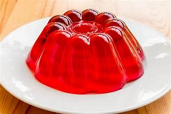
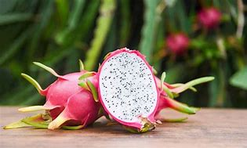
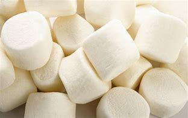
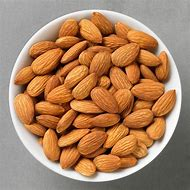

| Dragon Fruits | Jelly | Marshmallow | Almonds |
Jelly ~ Jelly, a semitransparent confection consisting of the strained juice of various fruits or vegetables, singly or in combination
Dragon Fruits ~ Dragon fruit, also known as pitaya or the strawberry pear, is a beautiful tropical fruit that is sweet and crunchy
Marshmallow ~ Marshmallow is a confectionery made from sugar, water and gelatin whipped to a solid-but-soft consistency
Almonds ~ The sweet almond is cultivated extensively in certain favourable regions, though nut crops are uncertain wherever frosts are likely to occur during flowering
